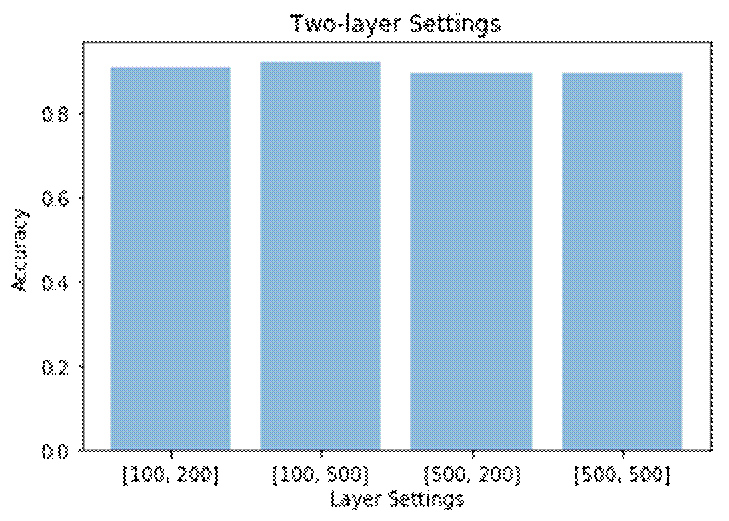

Analyzing Parameter Performance on Deep Belief Networks
Andy Thai
Department of Cognitive Science, Department of Mathematics
University of California, San Diego
La Jolla, CA
Code and results are available here.
Abstract
The rise of deep learning in recent years has led to adaptations of many different supervised learning models, each made to tackle subsets of problems. Deep belief networks are a unique type of model, made up of restricted Boltzmann machines (RBMs) stacked upon each other to enable hierarchical representations of data. For these networks to achieve peak performance on datasets, tuning parameters to be optimal is extremely key. This paper will explore parameter optimization within deep belief networks. Using MNIST, I look to find the best possible parameters for a deep belief network and compare its performance against other standard models used throughout supervised classification.
Keywords: deep belief networks, SVM, MNIST, supervised learning, neural networks, deep learning
1. Introduction
Recent upgrades in hardware and computing have led to an explosion of innovation and development within the fields of machine learning. Faster, more efficient hardware components have allowed deep learning models, previously too slow to run on most computers, to be more easily adapted to everyday general use.
Early models using backpropagation and gradient-based learning methods came across the vanishing gradient problem, where gradient updates to network weights could potentially get the weight stuck on a value so small to the point where weights could no longer be updated. This would lead to significant issues in training where affected weights remained constant for an entire training session.
The introduction of deep belief networks (Hinton et al., 2006) offered a potential solution to this vanishing gradient problem. This would be done by pre-training each layer, originally set as a Restricted Boltzmann Machine, via unsupervised training to initialize the weights, then training them again via the supervised learning method. These deep belief networks cemented the foundation for future work on neural networks, and ultimately were a huge factor in the explosion of deep learning for the near future.
However, to properly utilize these deep belief networks to their fullest extent, careful attention must be paid to their parameters, which dictate how the model behaves when training itself with training datasets. I take a formulaic approach to tuning the parameters on the MNIST dataset, iteratively testing each parameter on a model and gauging accuracy to achieve a set of parameters that output the best overall performance. Results can potentially lead to optimal parameters for training on sets similar to the MNIST handwritten digit set, such as the Stanford OCR.
2. Method
The deep belief networks library used here were found at albertbup's deep-belief-network GitHub repository. The dataset these networks were trained on was taken from the MNIST handwritten digits. The dataset was loaded into a Jupyter Python file, where each handwritten digit data point is represented by a NumPy array holding 784 integers from 0-255 representing a pixel hue (0 being white, and 255 being the darkest black). The dataset was normalized from 0 to 1 by dividing each pixel value by 256 to obtain floating point numbers. To cut down on training time, the dataset was cut down to 1000 data points made up of 10 classes. The first 100 data points for each class is taken and put into the final set used for this experiment. The set is then split into a training set and test set with an 80/20 split.
To tune the hyperparameters, a series of tests were run gauging performance on the default deep belief network settings with the one parameter changed. The parameters tested were the number of layers (1, 2, or 3), pre-training learning rates (RBM), learning rate, pre-training lengths, and backpropagation iterations. For each parameter, the best performing setting aws saved and noted for future continued benchmarks.
The first test was run on networks with one hidden layer, with varying units: 100, 200, 300, 400, and 500 units. The next test was run on networks with two hidden layers, with a varying number of units in each layer. The first layer had either 100 or 500 units, while the second layer had either 200 or 500 units. The specific settings tested were: [100, 200], [100, 500], [500, 200], [500, 500]. The last test for the number of layers was run with three hidden layers. The first layer had either 100 or 500 units, the second layer had either 200 or 500 units, and the third layer had either 300 or 500 units. The specific settings tested were: [100, 200, 300], [500, 200, 300], [100, 500, 300], [100, 200, 500], [500, 500, 500], [500, 200, 500], [100, 500, 500], and [500, 500, 300].
The next parameter tested was the pre-training (RBM) learning rates. This parameter determines the learning rate of the network in the pre-training stage. The learning rates tested were 0.01, 0.05, 0.10, 0.50, and 1.00.
Afterwards, the learning rate parameter was tested. This learning rate determines the learning rate of the network in the fine-tuning stage. Like the pre-training learning rate, a similar process will be run for the network's learning rate. The learning rates tested will be 0.01, 0.05, 0.10, 0.50, and 1.00.
Next was the pre-training length, which determines the number of epochs each layer is run in the pre-training stage. The number of epochs tested was 1, 2, 5, 10, 20, 30, 40, 50, 100, and 200.
After that, the fine-tuning / backprop lengths, which determine the number of epochs the network will be run in the fine-tuning stage, was tested. The specific lengths tested were 1, 5, 10, 20, 50, 100, and 200.
After running through all these parameters, the best performing settings for each parameter was chosen for the first benchmark tests. These tests consisted of the best performing parameters with either a one hidden layer, two hidden-layer, or three hidden-layer network setup. The best performing model out of all the first initial benchmark tests was taken. Those settings would then be run on either the sigmoidal or ReLu activation function, with varying dropout settings for each model. Eleven dropout settings will be run on the models: 0.0, 0.1, 0.2, 0.3, 0.4, 0.5, 0.6, 0.7, 0.8, 0.9, and 1.0, for a total of 22 tests in the second benchmark. The test with the highest accuracy of these 22 tests was chosen as the final model.
After choosing the best model, a series of alternate models was run on the MNIST set. The accuracy of these models was compared with the final model. The models chosen are taken from the SKLearn library: LinearSVC, DecisionTreeClassifier, AdaBoostClassifier, RandomForestClassifier, and four different SVC models. The linearSVC model used four different C-values. The SVC models were made up of the default parameters, using a 3rd degree polynomial with an rbf kernel. The C parameters for both the linearSVC and the SVC were 0.1, 1, 10, and 100.
3. Experiment
One-layer
Running the tests on a one-layer network, it was found that the most accurate number of units are 200 and 300, which were tied for 91% classification accuracy.
Two-layer

Running the tests on a two-layer network, it was found that the most accurate setting is 100 units in the first layer, and 500 units in the second layer: [100, 500], with a classification accuracy of 92% accuracy.
Three-layer
Running the tests on a three-layer network, it was found that the most accurate setting is 500 units in the first layer, 200 units in the second layer, and 300 units in the third layer: [500, 200, 300], with a classification accuracy of 92.5%.
Pre-training (RBM) Learning Rates
Running the tests on the pre-training learning rates, it was found that the highest accuracy was with learning_rate_rbm=0.05, with a 91% classification accuracy.
Learning Rate
Running the tests on the learning rates, it was found that the highest accuracy was with learning_rate=0.1, with a 91.5% classification accuracy.
Pre-training Lengths
Running the tests on the pre-training lengths, it was found that the highest accuracy was with n_epochs_rbm=40, with a 93% classification accuracy.
Fine-tuning / Backprop Lengths
Running the tests on the backpropagation epochs, it was found that the highest accuracy was with n_iter_backprop=200, with a 91% classification accuracy.
First Benchmark
Given the results given in previous tests, these following models were benchmarked:
Model 1 (1-layer):
deep_belief_net(hidden_layers_structure=[200],
learning_rate_rbm=0.05,
learning_rate=0.1,
n_epochs_rbm=40,
n_iter_backprop=200,
batch_size=32,
activation_function='relu',
dropout_p=0.2)
Model 2 (1-layer):
deep_belief_net(hidden_layers_structure=[300],
learning_rate_rbm=0.05,
learning_rate=0.1,
n_epochs_rbm=40,
n_iter_backprop=200,
batch_size=32,
activation_function='relu',
dropout_p=0.2)
Model 3 (2-layer):
deep_belief_net(hidden_layers_structure=[100, 500],
learning_rate_rbm=0.05,
learning_rate=0.1,
n_epochs_rbm=40,
n_iter_backprop=200,
batch_size=32,
activation_function='relu',
dropout_p=0.2)
Model 4 (3-layer):
deep_belief_net(hidden_layers_structure=[500, 200, 300],
learning_rate_rbm=0.05,
learning_rate=0.1,
n_epochs_rbm=40,
n_iter_backprop=200,
batch_size=32,
activation_function='relu',
dropout_p=0.2)
Results from the benchmark indicate that:
Model 1 gives a 90% classification accuracy,
Model 2 gives a 92% classification accuracy,
Model 3 gives a 90.5% classification accuracy.
Model 4 gives a 90.5% classification accuracy.
Results from above indicate that the best performing model is model 2, containing one hidden layer with 300 units.
Second Benchmark
Running through the second benchmark (ReLu activation) indicated the following results:
dropout = 0.0 : 88.0%
dropout = 0.1 : 89.0%
dropout = 0.2 : 92.0%
dropout = 0.3 : 90.0%
dropout = 0.4 : 89.0%
dropout = 0.5 : 89.0%
dropout = 0.6 : 87.0%
dropout = 0.7 : 90.0%
dropout = 0.8 : 80.0%
dropout = 0.9 : 15.5%
dropout = 1.0 : 10.0%
Running with sigmoidal activation indicated the following results:
dropout = 0.0 : 88.5%
dropout = 0.1 : 92.0%
dropout = 0.2 : 89.5%
dropout = 0.3 : 88.5%
dropout = 0.4 : 88.5%
dropout = 0.5 : 87.5%
dropout = 0.6 : 88.0%
dropout = 0.7 : 85.0%
dropout = 0.8 : 84.5%
dropout = 0.9 : 70.0%
dropout = 1.0 : 10.0%
Alternate models

Running on the alternative models, they outputted:
LinearSVC ( C = 0.1 ) : 86.0%
LinearSVC ( C = 1 ) : 84.5%
LinearSVC ( C = 10 ) : 84.0%
LinearSVC ( C = 100 ) : 84.0%
Decision Tree : 66.5%
Ada Boost : 39.5%
Random Forest : 79.5%
SVC ( C = 0.1 ) : 11.5%
SVC ( C = 1 ) : 80.5%
SVC ( C = 10 ) : 88.5%
SVC ( C = 100 ) : 89.5%
4. Conclusion
From the given results, I find that the parameters chosen using the process noted outputs two deep belief network settings tied for highest performance at 92% classification accuracy. Using this process results in deep belief networks that significantly outperform other methods of supervised learning as seen with boosting, random forests, decision trees, and the above support vector machines. From the parameter tuning process, we also find that the parameter settings taken from this process have resulted in deep belief network accuracies generally higher than other deep belief network settings, including the default parameters.
On another note, one of the parameters done in the testing phase, specifically the parameter n_epochs_rbm=40, with otherwise default parameters, had a classification accuracy of 93%. This is the highest accuracy performance seen in any of the models tested, including the two final models. However, this is not as big of an improvement over the final models as it seems, given the rather small training and test set size.
Hopefully, the results found in these experiments will prompt further investigation into parameter tuning for future applications of deep belief networks, especially on similar datasets to MNIST.
5. References
H Geoffrey E., O Simon, and T Yee-Whye. A fast learning algorithm for deep belief nets. Neural Comput, 2006.